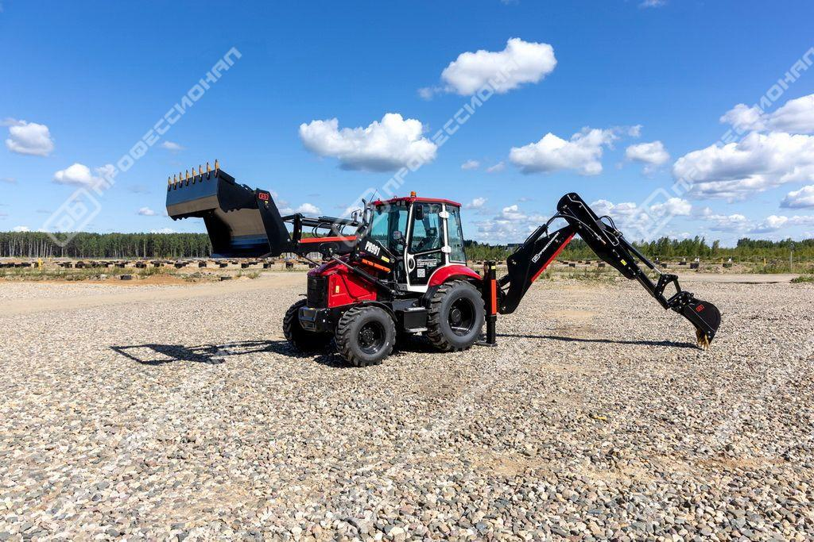
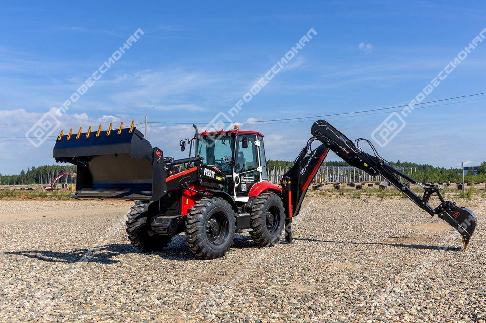
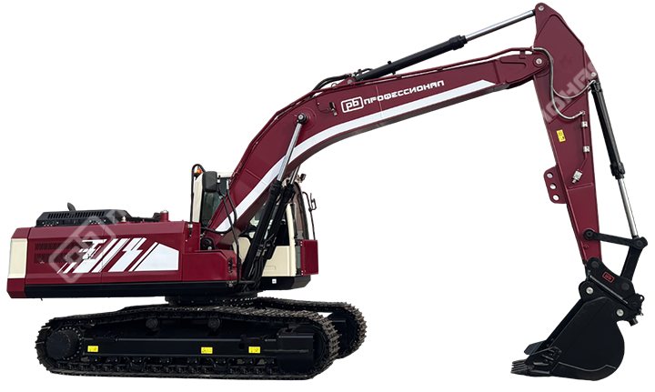
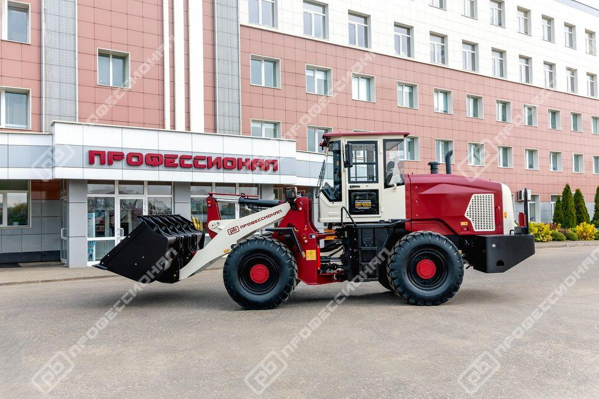
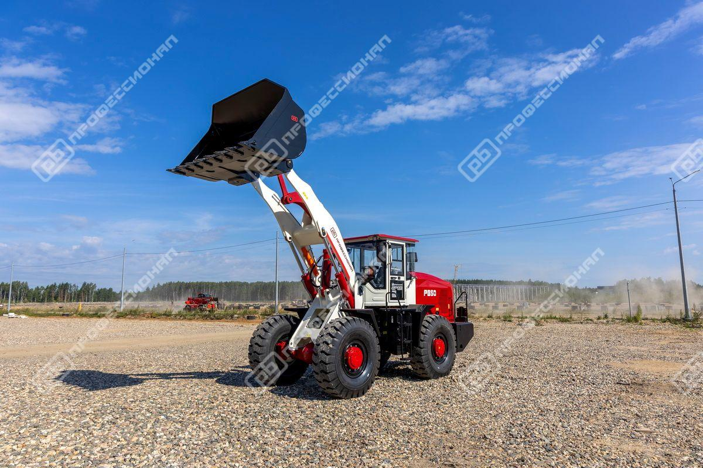
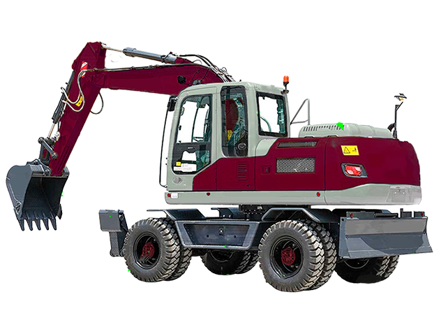
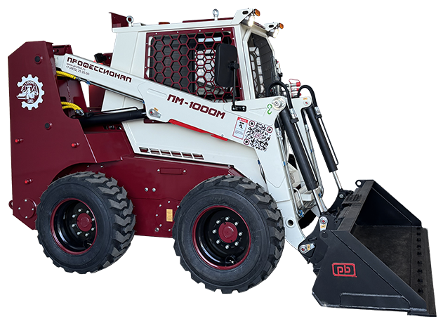
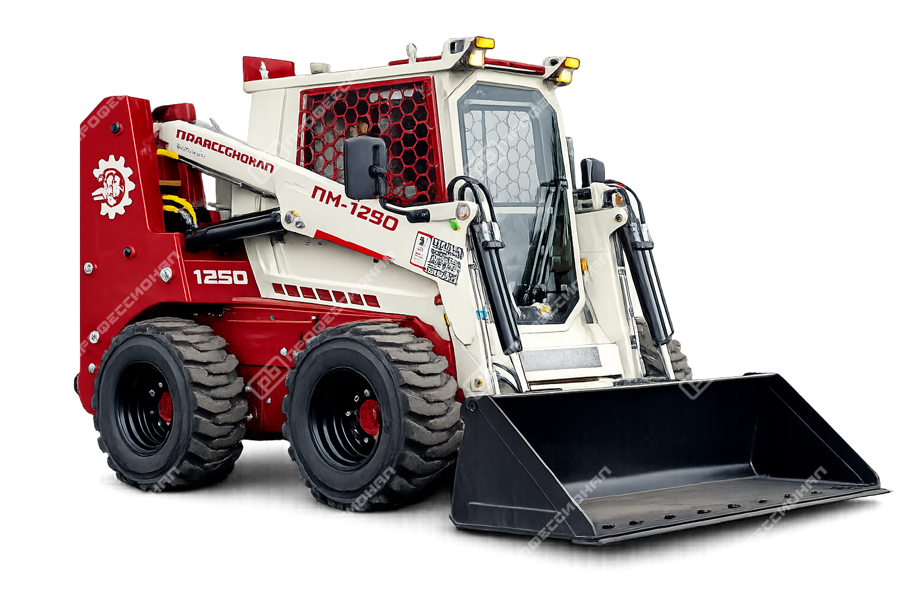
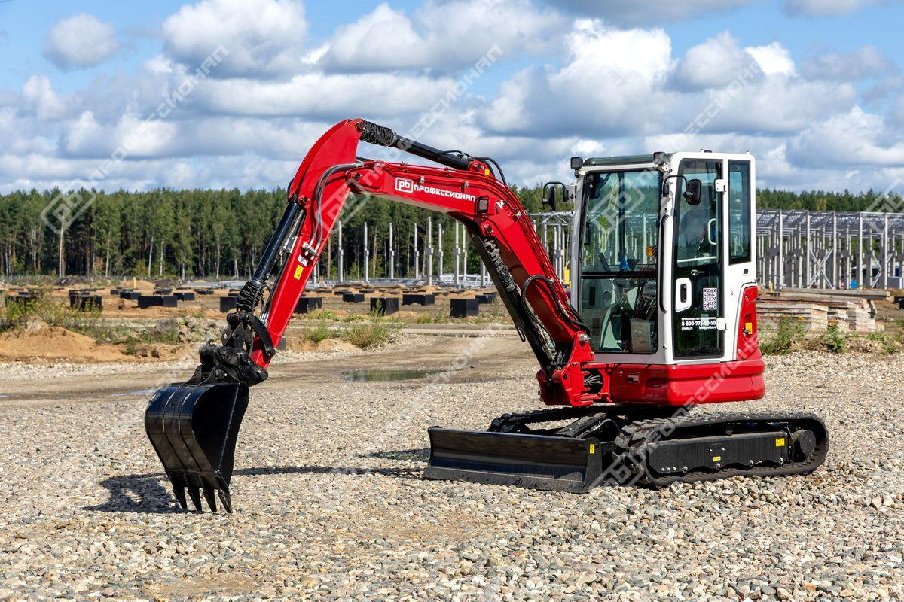
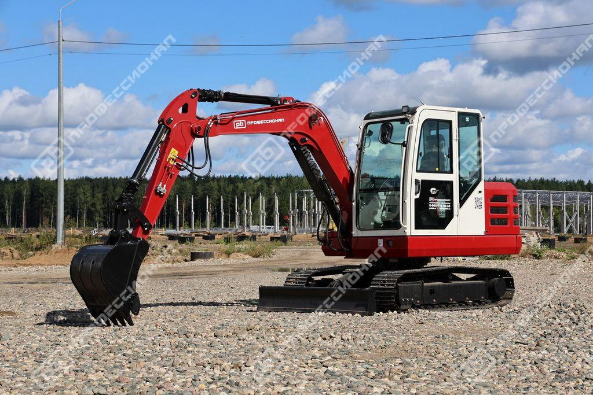

Сделано в РФ
PB 991 (Разновеликие колёса)
- Мощность двигателя
- 99.3 л.с.
- Грузоподъёмность
- 3900 кг
- Макс. скорость
- 40 км/ч
Каталог
Характеристики взяты с карточек завода «Профессионал». Комплектацию перед договором подтверждаем отдельно.















